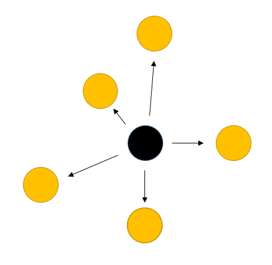

Chapter 3 Univariat data
3.1 Introduction
- Univariate: Single variable
- Data collection process
- Case: One of several different possible items of interest
- Variable: Some measurement of a case
- Univariate data set: A set of measurements for a variable
\[ x_1, x_2, ..., x_n \]
library(UsingR)
exec.pay
?exec.pay- Levels of measurement
- Nominal (명목형) – 사람 이름
- Ordinal (순서형) – 달리기 도착 순서
- Interval (구간형) – 선수1, 선수2 종점통과 시간
- Ratio (비율형) – 출발시간 기준 종점 통과 시간
- Data type in R
- Numeric data types
- Discrete (이산형) data - 카운트, 횟수
- Continuous (연속형) data - 키, 몸무게, Cannot be shared
- Factors data - Categories to group the data
- Character data - Identifiers
- Date and time
- Hierarchical data - 네트워크 구조
- Numeric data types
3.2 Data vectors
- Using combine function
#The number of whale beachings in Texas during the 1990s
whale <- c(74, 122, 235, 111, 292, 111, 211, 133, 156, 79)
#Object `whale` is a data vector == (univariate) data set
# The size
length(whale)
sum(whale)
sum(whale)/length(whale)
mean(whale)- Vectorization
whale - mean(whale)
whale^2 - mean(whale)
sqrt(whale)- Adding values to a vector variable
x <- 1
x <- c(x, 2)
x## [1] 1 2x <- c(x, 3, 3, 3, 4)
x## [1] 1 2 3 3 3 4- Missing/NULL values
- NA: Not available, The value is missing
- NULL: a reserved value
- NaN: Not a number (0/0)
- Inf: (1/0)
hip_cost <- c(10500, 45000, 74100, NA, 83500)
sum(hip_cost)
sum(hip_cost, na.rm=TRUE)
?sum- Attributes: names in data vectors
head(precip)
class(precip)
length(precip)
names(precip)
order(names(precip))
test_scores <- c(100, 90, 80)
names(test_scores) <- c("Alice", "Bob", "Shirley")- Indexing
head(precip)
precip[1]
precip[2:10]
precip[c(1,3,5)]
precip[-1]
precip["Seattle Tacoma"]
precip[c("Seattle Tacoma", "Portland")]
precip[2] <- 10- Functions for generating structured data
1:5
seq(1,5, by=1)
seq(0, 100, by=10)
seq(0, 100, length.out=11)
?seq
rep(5, times10)
rep(1:3, times=4)3.3 Data type
- Numeric data
class(1)
class(pi)
class(seq(1,5,by=1))- Character data
ch <- c("Lincoln", "said", "and")
class(ch)- Combining strings - paste function
paste("X", 1:10)
paste("X", 1:10, sep="")
paste("The", "quick", "brown", "fox")
paste(c("The", "quick", "brown", "fox"))
paste(c("The", "quick", "brown", "fox"), collapse=" ")
x <- 1:10
paste(x)
paste(x, collapse=":")- Factors
x <- c("Red", "Blue", "Yellow", "Green", "Blue", "Green")
y <- factor(x)
y- Adding a level
levels(y)
y[1] <- "Gold"
ylevels(y) <- c(levels(y), "Gold")
levels(y)
y
y[1] <- "Gold"
y- Odered factors (ex. 위치 바꾸기)
#library(UsingR)
str(Cars93)
x <- Cars93$Origin
plot(x)
levels(x) <- c("non-USA", "USA")
levels(x)
plot(x)- Logical data
- TRUE and FALSE
- “is” functions
- Comparison by
<,<=,==,!=,>=,> - Combination by
!,&,|
is.na(1)
is.numeric(1)
is.logical(TRUE)
pi < 3
precip < 30
which(precip < 30)
any(precip < 30)
all(precip < 30)
any(39 == precip)
which(39 == precip)
sum(precip < 30)
sum(c(TRUE, TRUE))
x <- Cars93$Origin
x == "USA"
which(x == "USA")
i <- which(x == "USA")
x[i]
x <- 1:100
x < 10
x > 90
x < 10 | x >90
which(x < 10 | x >90)
i <- which(x < 10 | x >90)
x[i]
x[x < 10 | x >90]- Date and time
- Unixtime, POSIX time
- 1970년 1월 1일 00:00:00 협정 세계시(UTC) 부터의 경과 시간을 초로 환산
- 32비트로 표현된 유닉스 시간은 1970년 1월 1일 00:00 (UTC)에서 2,147,483,647 (231 - 1) 지난 후인 2038년 1월 19일 03:14:08 UTC에 2038년 문제를 발생시킨다. 이는 산술 오버플로와 관련 있는 문제이다. –wiki-
library(lubridate)
current_time <- now() # record since 1970
as.numeric(current_time)
as.numeric(now())
month(current_time)3.3.1 Example 02-1
Recoding values
다음은 신생아들의 키를 나타내는 data set 이다. 오류 값을 찾아내고 이들 값을 NA로 바꾼 후 평균 값을 구하라.
x <- babies$dwt
x3.3.2 Example 02-2
Average distance from center

\[\begin{equation} (| x_1 - \bar{x} | + |x_2 - \bar{x}| + ... + |x_n - \bar{x}| )/n \end{equation}\]